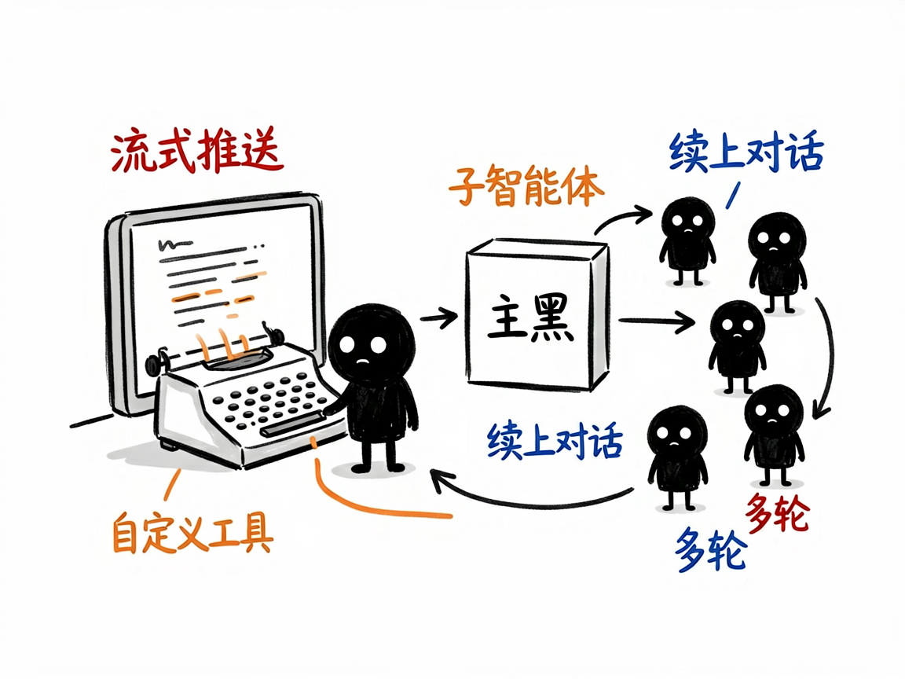

想做一个会自己干活的 AI 应用？这个技能把底层都铺好了 —— claude-agent-sdk 介绍
很多人想做一个 AI 应用：不只是聊天，而是能自己读写文件、上网搜资料、调用你的接口、把活干完。但一上手就发现，光是"让 AI 在程序里跑起来、还能中途插话、管理多轮对话、控制它能用哪些工具"这些事，就够折腾好几天。
claude-agent-sdk 就是来解决这件事的。 你告诉它想要什么样的 AI 应用，它还你一个能自主干活的 AI 智能体（可以理解为被你程序驱动、会自己调用工具的 AI 助手）。它把"怎么运行 Claude、怎么流式返回结果、怎么管会话、怎么加自定义工具"这些脏活累活全封装好了。

它到底能做什么
- 在你的程序里启动一个 AI 智能体，直接复用 Claude 的能力：读写文件、联网搜索、调用你的接口、把活自主干完。
- 支持流式返回：AI 思考到哪、调了什么工具、产出什么，都能实时推给你的前端，方便做打字机效果或进度展示。
- 管理多轮对话和会话：能续上之前的聊天（靠会话编号恢复上下文），也支持交互式多轮问答。
- 让你接上自定义工具（用 MCP 协议，可以理解为"给 AI 连上你自己的功能"，比如查天气、读数据库），AI 需要时就自己调用。
- 支持子智能体：让一个主 AI 把任务派给多个专门的 AI 分头做，比如一个负责搜索、一个负责写报告。
- 提供权限控制、钩子（在 AI 调工具前后做拦截校验）、结构化输出（强制返回固定格式）等，方便做生产级应用。

怎么用
你不需要记任何命令。在 codex / workbuddy 等 agent 装好 claude-agent-sdk 技能后，直接对 AI 说话就行：
场景 1：你想做个能读代码库的助手 你：帮我用 Claude 做一个 AI 应用，能读取我项目里 src 目录的代码、分析一下结构 AI：它借助这套能力启动一个会干活的 AI 智能体，复用 Claude 的能力读写文件，自主把分析跑完，并把进度实时推给你看。
场景 2：你想要一个能查资料的客服 你：给我做一个客服机器人，能连上我们的数据库查订单、还能调天气接口 AI：它用 MCP 协议帮你接上自定义工具，AI 需要查订单或天气时自己调用，并支持多轮对话和会话续接。
场景 3：你想要多 AI 协作 你：我想让一个主 AI 分派任务，一个去搜索、一个去写报告 AI：它用子智能体机制帮你搭好协作结构，主 AI 派活、专门的 AI 分头完成，再汇总给你。
谁适合用
- 想用 Claude 的能力搭建自己的 AI 产品、内部工具或自动化流程的人（让 AI 按这套能力帮你搭）。
- 做聊天机器人、客服系统、研究助手等需要"AI 真去干活"的团队。
- 需要多智能体协作、自定义工具集成、流式交互体验的应用构建者。
一点说明
它是装在 codex / workbuddy 这类 AI 助手里的技能，不是普通人双击打开的 App——你得先有能加载技能、连得上模型的 AI 环境，它才帮得上忙。它的定位是"底层能力包"：文档很全（含官方文档全文和二十多条常见坑），但真正把它变成某个产品，还得你把业务逻辑说清楚、让 AI 帮你写。具体 API 与能力以项目引用文档为准。